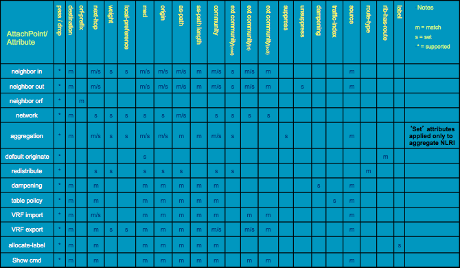

IOS-XR Route Policies
Posted on Fri 06 September 2019 in Network
Route Policy Language
Overview
In IOS, routes can be imported, exported, and manipulated through the use of route-maps. IOS-XR does not have a route-map feature; instead they have a more powerful equivalent call route policy language (RPL). Like route-maps, route-policies operate sequentially; however they add the ability to invoke or reference other route-policies (think functions invoking other functions).
One important note about route policies is that they are manditory for all BGP peers, even if it is a 'pass-all' RPL.
Configuration
Basic 'Pass-all' RPL
At a minimum, the following is required to add to BGP sessions to allow importing and exporting routes:
RP/0/0/CPU0:router(config)# route-policy pass-all RP/0/0/CPU0:router(config-rpl)# pass RP/0/0/CPU0:router(config-rpl)# end-policy RP/0/0/CPU0:router(config)# commit
Editing Existing RPLs
If an attempt is made to edit an existing RPL in the same way, the following warning will be displayed:
RP/0/0/CPU0:router(config)# route-policy pass-all % WARNING: Policy object route-policy test' exists! Reconfiguring it via CLI will replace current definition. Use 'abort to cancel.
What does this mean? Let's attempt to add a drop after the existing pass statement:
RP/0/0/CPU0:router(config-rpl)# pass RP/0/0/CPU0:router(config-rpl)# end-policy RP/0/0/CPU0:router(config)# commit
Now let's take a look to see what happened:
RP/0/0/CPU0:router(config)#show run route-policy pass-all route-policy pass-all drop end-policy
The configuration was completely replaced! Luckily there is a way to get around this:
RP/0/0/CPU0:router#edit route-policy pass-all vim
Since IOS-XR is running on top of linux, Cisco exposes the text editors emacs, nano, and vim to directly edit the content of RPLs. After the saving and quitting, a prompt for a commit will pop up. If 'yes' is entered, IOS-XR will parse through the changes, look for errors, then attmpt to merge the changes into the committed configuration.
The problem with using a text editor to edit the RPL is that it now becomes subject to typos. Assume the existing drop is replaced with dorp (simple typo). After saving::
Proceed with commit (yes/no/cancel)? [cancel]: yes Parsing. 42 bytes parsed in 1 sec (41)bytes/sec
% Syntax/Authorization errors in one or more commands.!! SYNTAX/AUTHORIZATION ERRORS: This configuration failed due to !! one or more of the following reasons: !! - the entered commands do not exist, !! - the entered commands have errors in their syntax, !! - the software packages containing the commands are not active, !! - the current user is not a member of a task-group that has !! permissions to use the commands.
dorp
end-policy
It notices that the syntax is incorrect (in this case does not recognize dorp as a valid command), and refuses to commit the change. Once dorp is replaced with pass (the command we want in the first place), it will be much happier. Simply edit the text then save and IOS-XR will prompt a commit:
Proceed with commit (yes/no/cancel)? [cancel]: yes Parsing. 42 bytes parsed in 1 sec (41)bytes/sec Committing. Prepared commit in 0 sec
1 items committed in 1 sec (0)items/sec Updating. Updated Commit database in 1 sec
More Complex RPLs
More complex RPLs can be created using an if...then syntax. Here is an example:
route-policy complex if as-path originates-from '911' then pass endif end-policy
It is also possible to chain together multiple if statements with the elseif and else statements. Here is an example:
route-policy more-complex if as-path neighbor-is '111' then set med 111 elseif local-preference eq 911 then set local-preference +89 else pass endif end-policy
RPL Elements
Actions
Every route policy requires a ticket for the route to be accepted or dropped. This ticket can be generated using one or more of the following actions:
Pass
- Prefix is allowed if not later dropped
- Pass grants a ticket to defeat the implied default
drop - Execution of the RPL continues after a
pass
Set
- Changes a value
- Values can be set more than once
- Prefix is allowed if not later dropped
- Execution continues after set
Done
- Prefix is allowed
- Execution is ended
Drop
- Prefix is discarded
- Explicit
dropstops policy execution - Every RPL ends with an implicit default
dropif the policy runs to the end without generating a ticket.
Comparison Operators
The following comparison operators are supported:
- eq - equal to (numeric equality)
- is - exact match
- gt - greater than or equal to
- le - less than or equal to
Boolean Operators
The following boolean operators are supported (in order of precedence):
- NOT - The following statement is false
- AND - All of the following statements are true
- OR - One or more of the following statements are true
Parenthesis are also supported to override order of operations and/or to add clarity.
Example 1:
if med eq 10 and not destination in (192.0.2.0/24) or community is (65551:666) then
Example2:
if med eq 10 and (not destination in (192.0.2.0/24) or community is (65551:666)) then
In example 1, not destination in (192.0.2.0/24) will be processed first, followed med eq 10, and finally community is (65551:666). Example 2 is the same as example 2 except for the addition of some parenthasis. In example 2 not destination in (192.0.2.0/24) will still be processed first, but the addition of the parenthasis will now cause community is (65551:666) to be processed before med eq 10.
Parameters
It is possible to create a policy that accepts parameters to be stored as variables used later in the policy when called by another policy. Consider the following example::
route-policy set-values ($med, $weight) set med $med set weight $weight end-policy
route-policy call-set-values apply set-values (10, 30) end-policy
In this example, the policy call-set-values passes the values 10 and 30 to the set-values policy as the med and weight, respectively. This allows policies to be reused similar to reusing functions.
Sets
IOS-XR replaces aspath-lists, community-lists, and prefix-lists with as-path-sets, community-sets, and prefix-sets. These lists can be created inline or as named sets.
Inline vs Named Sets
Inline
Inline sets are configured directly in the policy. This makes them slightly more performant when compared to named sets; however they can become unruly with a large number of entries. Example of an inline set::
route-policy inline-sets if as-path in (ios-regex '_64496$', ios-regex '_64511$', ios-regex '_65551$') then pass else drop endif end-policy
Named sets
Named sets can take slightly longer to execute; however they are much more managable with a large number of entries. Examples of named as-path-sets::
as-path-set lw ios-regex '_64496$', ios-regex '_64511$', ios-regex '_65551$', end-set
as-path-set lw ios-regex '_(64496|64511|65551)$' end-set
Set Types
as-path-sets
AS-path-sets can be used to match based on the contents of the AS path in BGP similar to aspath-lists in IOS. Matches can be made based on regex (either DFA-style or IOS-style), AS path lenth, origin AS, neighbor AS, unique length (ignoring prepends and duplicates), and transit AS.
The following is an example of an as-path-set that will match if all of the following are met:
- The AS-path length is less than or equal to 18 AS hops
- The route originates from AS 911
- The route is advertised by AS 111
as-path-set example length le 18, originates-from '911', neighbor-is '111',
community-sets
Community-sets can be used to match on BGP communities similar to community-lists in IOS; they allow for matching in RPLs based on explitly listed communities or well-known communities. The supported well-known communities are:
- accept-own (0xFFFF0001
- internet (0:0)
- no-export (65535:65281)
- no-advertise (65535:65282)
- local-as (65535:65283)
Examples:
community-set example accept-own 65551:666 internet end set
community-set just-say-no no-advertise no-export
prefix-sets
Prefix-sets are used to match on prefixes advertised or received via BGP similar to prefix-lists in IOS. Unlike in IOS, separate prefix-sets are not required for IPv4 and IPv6. The following is an example of a prefix-set that will match on all LW IPv6 prefixes with a shorter than a /48, and on an exact match for IPv4 addresses:
prefix-set my-org 2001:DB8::/32, 192.0.2.0/24, 198.51.100.0/24, 203.0.113.0/24, end-set
Usable attachpoints for RPL
